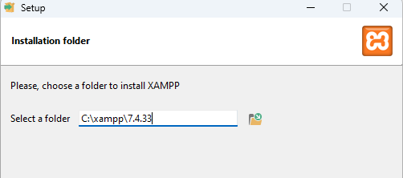
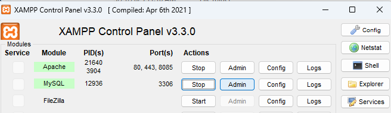
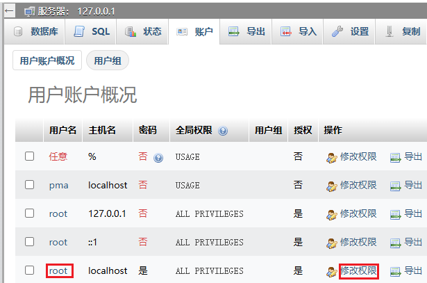
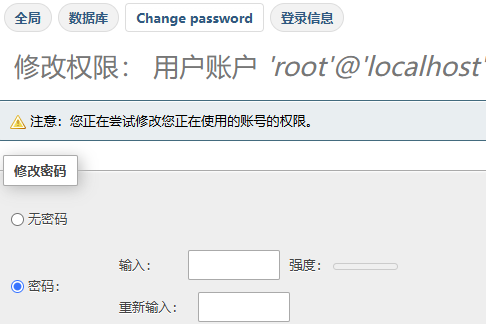
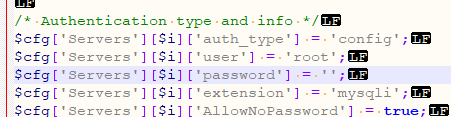
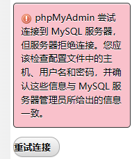
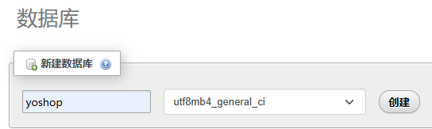
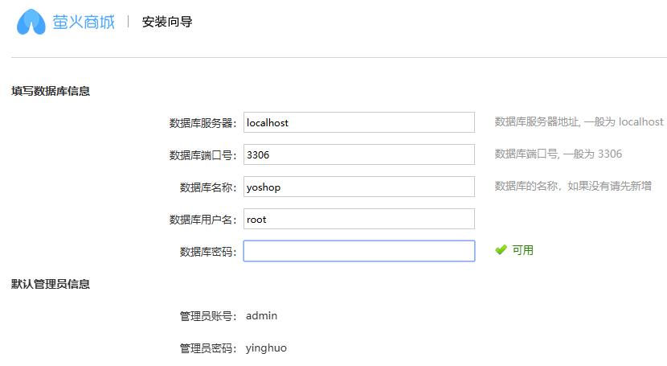

youshop
官网资料
后端：https://gitee.com/xany/yoshop2.0
前端：https://gitee.com/xany/yoshop2.0-uniapp
Optional: 后台VUE端（前端工程文件，部署时无需下载，仅前端开发时用到）
下载地址：https://gitee.com/xany/yoshop2.0-store
下载地址：https://gitee.com/xany/yoshop2.0-admin
安装教程： https://www.yiovo.com/doc/10023
默认的后台地址
默认的账户密码：admin yinghuo
环境要求
Nginx 1.10+
PHP 7.4
MySQL 5.6+
本地安装
代码仓库
注：gitee上yoshop新版本要求db版本已不适配xampp7，故使用yoshop2.11版本
(optional)前端：https://github.ibm.com/jiehou/yoshop2.0-uniapp
需要HBuildx才能编译，不做前端可以只下载build后的yoshop.zip https://github.ibm.com/jiehou/yoshop2.0-uniapp/releases/tag/v2.11
后端：https://github.ibm.com/jiehou/yoshop2.0
代码下载到本地后的目录参考
前端 C:\Project\study\yoshop\git\yoshop2.0-uniapp
后端 C:\Project\study\yoshop\git\yoshop2.0
注意：后端PHP无需编译，目录与后面配置的apache VirtualHost一致
DocumentRoot “C:/Project/study/yoshop/git/yoshop2.0/public”
Xampp
集成apache + php+ mysql, 有经验者可自行搭建Nginx(1.10+) + php(7.4) + mysql(5.6+)
win: https://sourceforge.net/projects/xampp/files/XAMPP%20Windows/7.4.33/
mac: https://sourceforge.net/projects/xampp/files/XAMPP%20Mac%20OS%20X/7.4.33/
如果安装了多个版本xampp的参考目录设置 C:\xampp\7.4.33
{kind=link}
httpd.conf
C:\xampp\7.4.33\apache\conf\httpd.conf
添加端口
查找 Listen 80， 添加一行 Listen 8085 作为youshop服务端口
设置权限
<Directory />
AllowOverride none
Require all granted
</Directory>
加载proxy模块
LoadModule proxy_module modules/mod_proxy.so
LoadModule proxy_http_module modules/mod_proxy_http.so
httpd-vhosts.conf
C:\xampp\7.4.33\apache\conf\extra\httpd-vhosts.conf
添加VirtualHost
#yoshop2 api
<VirtualHost *:8085>
DocumentRoot "C:/Project/study/yoshop/git/yoshop2.0/public"
ServerName yoshop
<Directory "C:/Project/study/yoshop/git/yoshop2.0/public">
Options Indexes FollowSymLinks Includes ExecCGI
AllowOverride All
Require all granted
</Directory>
</VirtualHost>
#local web folder
<VirtualHost *:80>
DocumentRoot "C:/Project/WEB_DIR"
ServerName localhost
ProxyPass /yoshopAPI http://localhost:8085
ProxyPass /payment2c2pAPI http://localhost:3000
ProxyPass /uploads http://localhost:8085/uploads
<Directory "C:/Project/WEB_DIR">
Options Indexes FollowSymLinks Includes ExecCGI
AllowOverride All
Require all granted
</Directory>
</VirtualHost>
Mysql
Start mysql via XAPMM Control panel
{kind=link}
phpmyadmin http://localhost/phpmyadmin/
root账户密码初始为空，修改密码
 {kind=link}
{kind=link}
config.inc.php
C:\xampp\7.4.33\phpMyAdmin\config.inc.php
{kind=link}
重新连接phpmyadmin
{kind=link}
创建db 名称yoshop
{kind=link}
安装yoshop
后端
{kind=link}
后端管理
账户密码：admin/yinghuo
后端店铺
前端
参考https://www.yiovo.com/doc/10026 用HBuilderX编译uniapp工程
将编译后的文件 从C:\Project\study\yoshop\git\yoshop2.0-uniapp\unpackage\dist\build\web
复制到 C:\Project\WEB_DIR\static\yoshop
或者直接下载编译完成的 https://github.ibm.com/jiehou/yoshop2.0-uniapp/releases/tag/v2.11